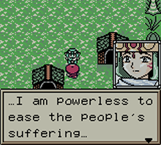
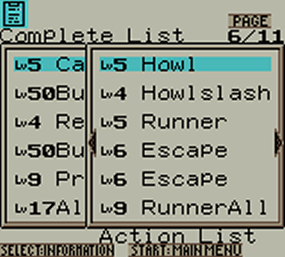
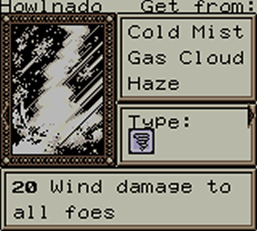
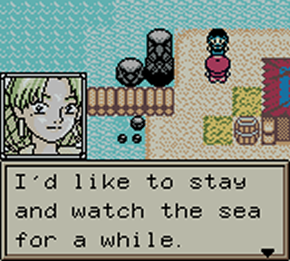
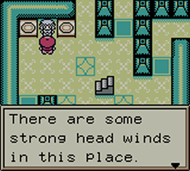
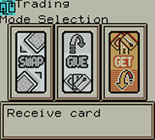
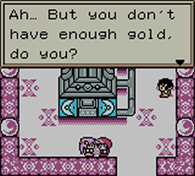
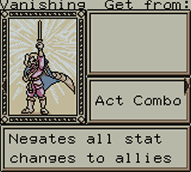

|
Adventurous Translations presents... Version 1.03: Very small again. The description for Resurrect said "fron" instead of "from",
which I didn't think was a big enough mistake to warrant a new version, but then I discovered that a certain kind of synthesis
(when the card that is created can't be equipped on the character but the first card selected was already equipped) resulted in
a garbled message. Ths message included a rogue letter "y" which as far as I can tell wasn't being used anywhere else in the game,
so I made the tile a blank space. Please let me know if you come across any blank spaces where you expected a lower case letter y,
and don't forget to report any other broken text you find! Version 1.02: Very minor edit. Fixes error text when trying to unequip an
accessory you have 100 of (discovered by Rockman X), and changes the "Take quiz?" question to "Answer?" so it
makes a bit more sense in both contexts in which the game calls for it. Well, this is it. Our first translation patch, 100% complete, and it's a
somewhat prolific one. It's been a pretty long project, with a fair few hurdles along the way. I actually started
working on this patch in about 2005, but lost the will to continue it for a long time after the hard drive it was
stored on bit the dust and everything was lost. It seems Hudson REALLY didn't want anyone poking around in this
game, using at least 5 different groups of compressed text, hi/lo RAM switching and various bits of data thrown
around the ROM randomly, making the whole thing pretty messy. At times, that made this project feel like a lost
cause. Thankfully, other Grandia fans from around the world had been interested in this translation since my old
"demo" version and made plenty of progress in private. When I finally came back to it in mid-2011, new developments
(particularly from malias, huge props to him) made things much easier and we were able to translate the whole thing.
The group name "Adventurous" comes from both the theme of the game series we've been working on, and the fact that
I really didn't know what I was letting myself in for when taking this game on. We may translate another game some
time, we may not. It all depends on which way the wind blows, I suppose. Enjoy the game, my friends. I think it has
the potential to be a great multiplayer game, since it seems well balanced and you can play it online via the TGB Dual
emulator. But play it however you want. It's time for us to take a rest.
DISTRIBUTION
You're free to distribute this patch however you see fit, providing that you do not charge for it, and do not provide
it alongside any ROMs or other illegal materials.  
HOW TO APPLY THE PATCH
We recommend Lunar IPS as your program for patching. If you open
Lunar IPS and check "Register File Type", from there all you have to do is double click on the file name, select the
untouched ROM dump from your original cartridge, and click "Open". The ROM will then be patched. If it doesn't
seem to be working, your emulator may require that you shorten the ROM's file name. Visual Boy Advance users don't even
need to apply the patch - just give it the same name as the ROM and the patching will be done automatically by the
emulator. FACTOIDS
Unused text includes "I saw Shirou walking away in a daze", "My Secret Collection: X" (several variants of this exist,
with the End of the World, Zizun, Hell Ba-Boom, Mirage and Stapler All cards mentioned), and the quiz host catching you
apparently trying to cheat (and giving you a prize for your cheek). The Pinky lover in Liete's Sanctuary also once said
"It seems there are some unusual Pinky Skills! Just my advice, but... Seeds! I don't trust them!!".
Action cards 190-200 were given away at Tokyo Game Show and cannot be acquired through regular play. Nevertheless, they
have still been translated.  
CREDITS
Project leader/Main translator: Mr Fwibbles TOOLS USED
Graphics editor: Kent Hanson's "Tile Layer Pro"  
SPECIAL THANKS
Advertising space: romhacking.net If you need help playing the game, check out the Parallel Trippers section on
Vast Lands of Grandia, complete with a walkthrough, maps, combo
and synthesis explanations, and more. Please send comments/questions
to: davies59@tesco.net  
|